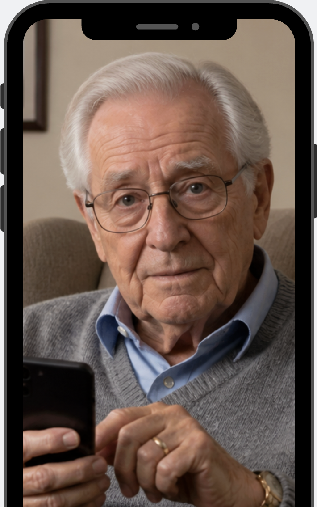
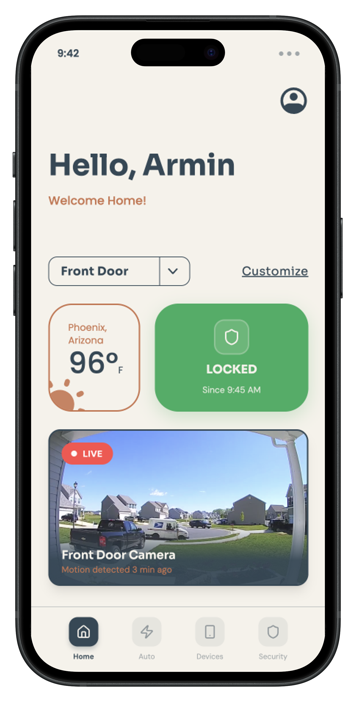
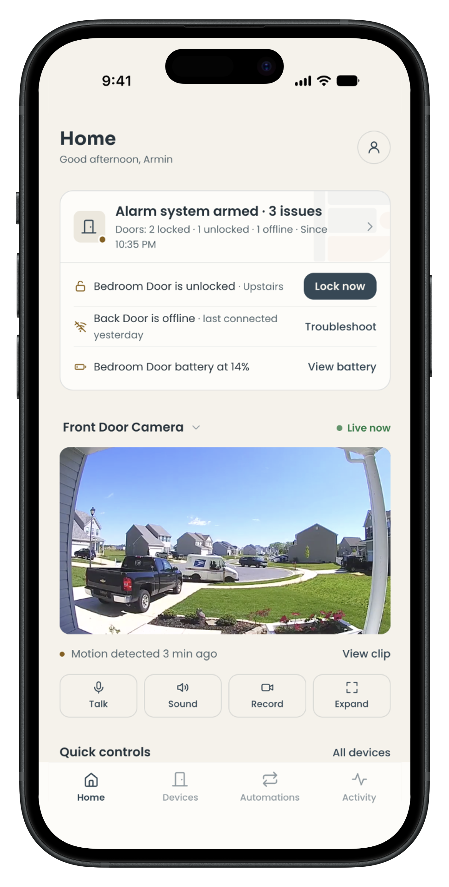
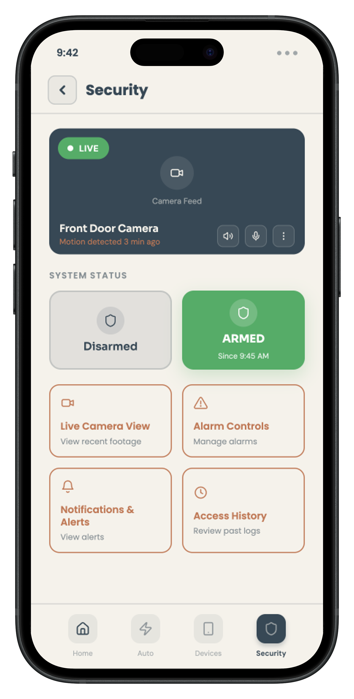
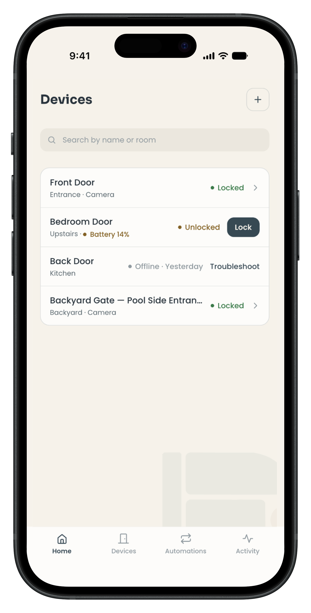
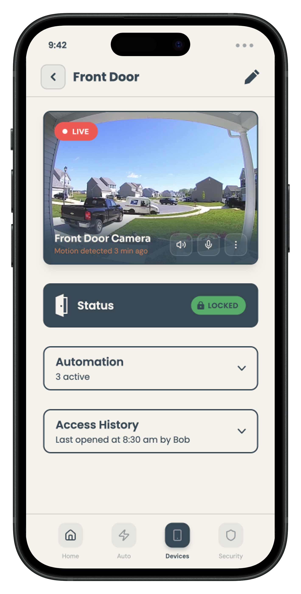
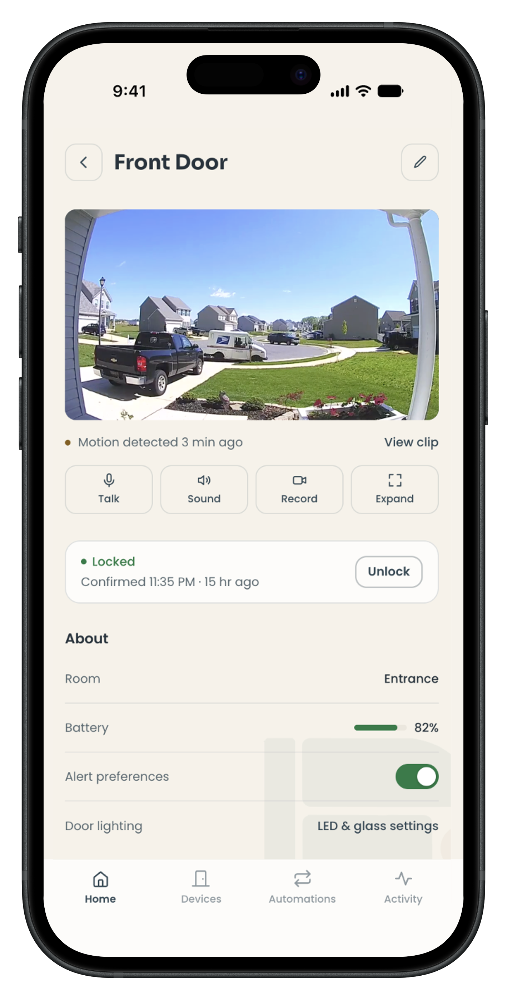
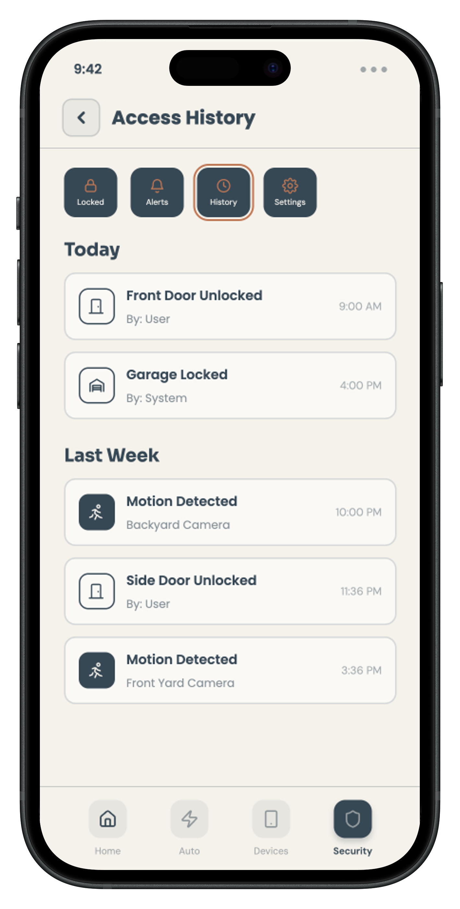
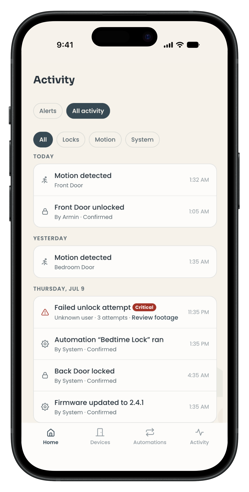
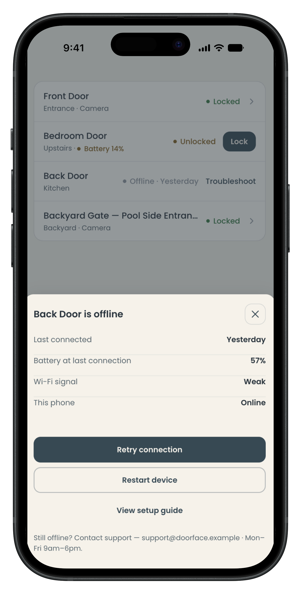

A UX/UI redesign for a smart door iOS app — focused on making lock-state feedback trustworthy, interaction flows accessible to all ages, and the design system ready for developer handoff.
When you tap "lock" and walk away, how does the app earn your confidence that the door actually locked?
THE QUESTION THIS PROJECT ANSWERS
Door Face Panels (DFP) is a startup building a new generation of smart door systems built on patented IoT technologies with customizable panel designs. Their iOS companion app — the Door Face App — lets users lock, unlock, and manage connected door hardware remotely.
Our team was brought in during Spring 2026 (ASU HSE 521) to evaluate the existing app and deliver a research-driven UX/UI redesign. The product handles high-trust, security-sensitive actions — meaning usability failures carry real consequences.
Invisible System Status
The app provided little or no feedback during locking actions. Users couldn't tell if the door had actually locked — a major gap for a security-critical product.
Cognitive Load in the Unlock Flow
The unlock task required too many decision steps, creating hesitation — especially for older or less tech-confident users.
Single-Modal Feedback Only
Confirmation relied on visual signals alone, with no audio or haptic reinforcement — leaving users with sensory constraints underserved.
Deliver a redesigned interface across four core dimensions: Usability, Reliability, Accessibility, and System Feedback Clarity — with developer-ready Figma assets and a structured design system.
I led usability evaluation and research-driven interface design. My role focused on diagnosing interaction failures through heuristic analysis, translating findings into design requirements, and shaping interaction decisions for users across age groups and technical backgrounds.
This was a four-person team project. Abdullah Albagami contributed to system-oriented design, Stephan Bui supported wireframes and the visual system, and Corrine Kao contributed to research, interface design, and prototyping. Corrine and I both worked on interface design; my contribution centered on usability, interaction logic, and research-to-design translation.
A full UX/UI redesign delivered as a high-fidelity Figma prototype with a complete design system — including a grid framework, card components, input validation states, and selection controls. The redesign removed interaction friction, made lock state legible at a glance, and added multimodal feedback for accessibility.
Evaluate the Existing App
Systematic heuristic walkthrough against Nielsen's 10 principles. Documented severity ratings for each issue.
Define Users Through Personas + HTA
Built Leo and Bob as contrasting need profiles. Mapped the unlock flow as a task hierarchy to locate specific points of failure.
Frame Design Requirements
Translated evaluation findings into requirements: clear lock-state feedback, streamlined flow, multimodal cues, consistent component language.
Phase 1 — Structure and Flow Exploration
Used low-fidelity prototypes to align stakeholder expectations, confirm the feature scope, and define navigation, page relationships, and interaction order.
Phase 2 — Visual Refinement and Systemization
Refined the validated structure into a high-fidelity experience with clearer hierarchy, device-state feedback, recovery flows, and reusable components.
We applied an Agile UX Design methodology — moving in structured sprints from diagnosis to high-fidelity output. Rather than stopping at aesthetic improvement, we grounded every design decision in evaluation data.
We evaluated the existing app against Jakob Nielsen's 10 Usability Heuristics. The most critical finding was a failure of Visibility of System Status: during locking, the interface gave no clear confirmation that the door had actually changed state.
This was rated major severity — in a product where users need to trust that their door is locked, silent or ambiguous feedback is not a minor annoyance. It actively erodes trust.
Lock confirmation was absent or uninterpretable
Users could not reliably tell if the door locked. Feedback was either missing entirely or too subtle to act on under stress.
Older users faced disproportionate friction
The unlock flow had unnecessary decision steps that generated cognitive load and fear of accidental actions — especially for Bob, our 75-year-old persona.
No multimodal feedback
Confirmation was visual-only. Users with low vision or motor difficulty had no alternative signal to confirm system state.
Design system lacked consistency
Component patterns were inconsistent, making it harder to establish user expectations or maintain visual trust across screens.
Leo Miller · Age 32
Software engineer, highly tech-confident, uses multiple smart home devices
Goal: fastest path to action — fewest taps, no friction
Frustration: ambiguous lock state forces him to re-check; wasted time

Bob Jenson · Age 75
Retired government official, lower digital confidence, wears glasses
Goal: unlock door safely and quickly, with clear confirmation it worked
Frustration: face recognition fails with glasses; no fallback, no feedback — anxiety spikes
Bob Jenson · Age 75 · Goal: Unlock door and enter home safely and quickly
|
Phase 1 😰 Face Recognition + Auto Unlock |
Phase 2 😟 View Homepage |
Phase 3 😐 Find Lock Control |
Phase 4 😟 Unlock Action |
Phase 5 🙂 Enter Home |
|
|---|---|---|---|---|---|
| Actions | Arrives at front door. Stands in front of camera. System fails to recognise face. Takes out phone and opens app. | Opens app homepage. Looks at camera feed, AI Learning panel, temperature, and locked status. | Searches for the lock/unlock button. Scans the interface to identify the right icon. | Presses unlock button. Waits for a response from the system. | Opens door. Enters home. |
| Thoughts & Feelings | "Why isn't it opening?" · "Do I need to take off my glasses?" · "This is taking too long." | "I just want to unlock the door." · "Where's the quickest way to do this?" · Mild hesitation. | "Is this the unlock button?" · Uncertain before acting. | "Did it work?" · Anxiety while waiting for door response. | "Okay, it worked." · Relief. |
| Pain Points | Face recognition fails under real-world conditions (glasses, lighting). No clear fallback or error explanation. | AI Learning label is unclear. Temperature and non-essential content competes with the primary action. | Lock control not visually prioritised. User must scan entire screen to find the action. | No immediate feedback during the unlock process. User uncertain whether the door has responded. | Process felt longer than expected. Too many steps for what should be a simple task. |
| Insights | Real-world conditions reduce system reliability. Entry must remain fast even when recognition fails. | Not all information is useful in every context. Interface must prioritise task-relevant actions. | Critical actions must be immediately recognisable — not buried in a scan. | Immediate feedback is essential for trust. Silence after action creates anxiety. | Even small delays erode the overall experience. Fewer steps = more trust. |
A Hierarchical Task Analysis (HTA) mapped the full unlock flow. For Bob, two friction points emerged:
— Unnecessary decision stages mid-flow required mental effort before the main action
— No indication of whether the system had registered his input
These weren't edge cases. They were predictable failures for a large portion of real users.
How might we design a smart lock interface that communicates real-time physical state clearly enough that a 75-year-old with low tech confidence can trust it — without slowing down a 32-year-old power user?
The core opportunity was feedback redesign: replace silent or ambiguous status signals with immediate, legible, multimodal confirmation. This single change would serve both personas — and make the product trustworthy for high-stakes security actions.
Real-Time Lock State Visibility
The door's true physical state is the most important thing the interface communicates. Redesigned lock control reports state immediately on every change — no ambiguity.
Multimodal Confirmation
Visual cues paired with audio feedback for every security-sensitive action. Users don't have to look at the screen to know the door locked.
Streamlined Interaction Order
Unnecessary steps removed from the unlock flow. Interaction order matches the user's mental model — what they expect to tap next is what's next on screen.
Consistent Component Language
A structured design system — grid, cards, inputs, selection controls — creates predictable visual patterns across all screens, building user confidence through familiarity.
The full design system was built and maintained in Figma as developer-ready assets:
Grid System
Column structure, spacing, and responsive breakpoints across desktop, tablet, and mobile.
Card Components
Reusable card patterns with defined content hierarchy, visual grouping, and CTA placement.
Input Fields
Text inputs with label structure, placeholder usage, and validation states: success, warning, error.
Selection Controls
Dropdowns, checkboxes, radio buttons, and toggles — structured for flexible, predictable input patterns.
In a security product, colour is not decoration — it carries meaning. We planned a disciplined state palette so a single glance tells the user whether a door is safe, needs attention, or is failing. Every status in the app maps to one reserved state colour, applied identically across Home, Devices, Front Door, and Activity — so the same colour never means two different things.
Success · #2FA96B
Locked / safe — the resolved, trusted state.
Warning · #E6B23A
Attention — low battery, unlocked, needs a decision.
Error · #EB5757
Failure / urgent — offline, failed action, critical alert.
Info · #2F80ED
Neutral status — informational, non-urgent.
Primary · #324856
Secondary · #C1795A
Background · #F5F2EA
Ofelia for headings (H1 56 → H6 20 px) and Poppins for body (20 / 18 / 16 / 14 px) — a defined type scale that keeps hierarchy consistent from a home-screen status card down to a settings row.
Phase 1 — Functional Prototype & Information Structure. A requirements-clarification and structure-building tool, not just a feature showcase. It aligned the team and stakeholders on feature priority, confirmed the necessity and ordering of the core screens, and turned research into concrete, discussable interfaces that defined the product's boundaries.
Phase 2 — Product Design Refinement. Keeping the requirements Phase 1 validated, the interface was re-evaluated and converged around real-world operating conditions — focusing on usability, security, error prevention, and exception handling.

Established that the home screen needed greeting, weather, door status, camera, and customization — setting the initial content and its ordering.

Stripped non-core distraction to return to the security essence — demoted security-irrelevant info (weather) and pulled Overall Status and Attention Items to the very top, matching the safety-first priority of everyday use.

Set up the initial Home / Auto / Devices / Security categories, confirming where each function belonged.

Regrouped into Home, Devices, Automations, Activity, removing the overlap between Security and Camera in favour of a task-oriented structure.
Security shouldn't be locked inside a single "Security" tab — it should be the foundation of the whole product. The most critical status and alerts were surfaced to the top of Home, while the fragmented monitoring once buried in the Security tab was reorganised into the more task-oriented Devices and Activity.
DESIGN RATIONALE · WHY THE SECURITY TAB WAS REMOVED

Confirmed Camera, Status, Automation, and Access History as core needs, using separate cards to clarify each functional module.

Moved from loose modules toward a device-management logic — re-integrated into Status, Control, Device Health, Settings, and Recent Activity for faster scanning.

Confirmed that Access Records, Motion Events, and Alerts needed to be logged, and established the basic data fields.

Introduced event priority and filtering — merged Alerts with History and added Unread / Urgent tags and filtering, improving response speed when something goes wrong.
Mainly confirmed the happy path and the baseline functional requirements.

Fully introduced edge cases — designed Offline, Low Battery, and Failed / Urgent states in depth, separating Device State, Available Action, and Recovery Action, and adding Troubleshooting to raise system trustworthiness.
The project concluded with a full UX/UI baseline: heuristic evaluation documentation, persona and HTA artifacts, low-fidelity wireframes, and a high-fidelity Figma prototype with a complete design system.
This established a clear design direction and development-ready foundation for the Door Face App team.
Empirical Usability Validation
Controlled sessions with target users to quantify task completion, time-on-task, error rates, and SUS scores. This turns design intent into measurable evidence.
Scenario-Based Testing Under Real Conditions
Test under network latency, device disconnections, and repeated input sequences. Reliability failures won't surface in ideal lab conditions.
System Synchronization Validation
Confirm that on-screen lock state always matches the door's actual physical position. Any mismatch destroys user trust — immediately and lastingly.
Design-to-Development Handoff
Translate design system into design tokens, component behavior definitions, and interaction rules — so what ships matches what was designed.
The heuristic evaluation identified five usability issues across Nielsen’s 10 heuristics, including three high-severity issues. The redesign directly addressed all five, with the greatest impact on the two most critical problems: invisible lock status and high cognitive load during the unlock flow.
Confidence in High-Trust Actions
Users can lock their door and know — immediately — that it worked. Removing uncertainty from a security action has outsized psychological value.
Accessible to Both Personas
Leo gets a streamlined, fast flow. Bob gets clear feedback and reduced decision load. The redesign doesn't sacrifice one user for the other.
The design system gives DFP a consistent visual foundation that can scale with their product. Developer-ready Figma assets reduce handoff friction and the risk of inconsistent implementation.
Strategic recommendations around accessibility (WCAG 2.1), security evaluation, and behavioral analytics position the product for sustainable, evidence-based iteration.
This project reinforced that high-stakes products require a different UX standard. When a user can't tell if their door is locked, that's not a minor friction point — it's a failure of the product's core promise.
Designing for two very different users (Leo vs. Bob) without creating two different experiences required careful prioritisation: the solution had to be fast enough for Leo and clear enough for Bob. That constraint forced better design thinking than either persona in isolation would have.
I'd push for user testing earlier — even informal walkthroughs with 3–5 participants would have validated whether our feedback redesign actually resolved Bob's uncertainty, rather than leaving that as an open recommendation. The project ended with strong design artifacts but limited behavioral evidence.
I'd also prioritise the system synchronization challenge earlier. The hardest usability problem for this product isn't in the interface — it's in the gap between what the app shows and what the door is actually doing. That's an engineering and trust problem, and UX can't solve it alone.
This project demonstrates how I apply structured evaluation frameworks — heuristic analysis, task decomposition, persona-driven scenario thinking — to translate abstract usability problems into concrete design decisions.
It also shows my interest in the intersection of UX and trust: how the interface shapes whether a person believes a system is working, even when the underlying system is correct. That gap between perceived reliability and actual reliability is where a lot of the most important UX work happens.